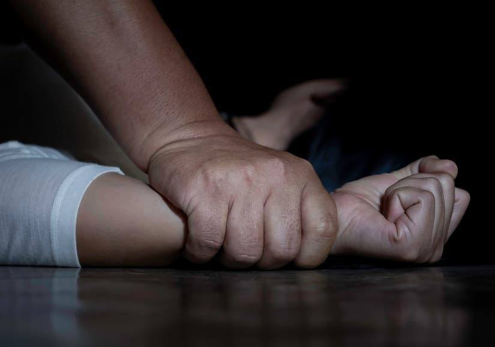

El feminicidio es la manifestación más extrema del abuso y la violencia de hombres hacia mujeres. Se produce
como consecuencia de cualquier tipo de violencia de género, como pueden ser las agresiones físicas, la
violación, la maternidad forzada o la mutilación genital.

¿Cómo se puede detener el feminicidio?
Si queremos evitar más feminicidios, tenemos que lograr que el Estado implemente politicas públicas libres de
creencias conservadoras, religiosas e ignorar las presiones de grupos anti derechos que solo buscan mantener un statu quo donde las mujeres están para servir al hombre, al patriarca.
¿Qué medidas se puede tomar para evitar la violencia?
Aumentar las relaciones sanas, estables y estimulantes entre los niños y sus padres o cuidadores;
Desarrollar habilidades para la vida en los niños y los adolescentes;
Reducir la disponibilidad y el
consumo nocivo de alcohol;
Restringir el acceso a las armas de fuego, las armas blancas y los
plaguicidas;
¿Qué es el feminicidio en la Republica Dominicana?
En nuestro país, desde mediados de la década de los ochenta, dentro del movimiento feminista y de mujeres
organizadas e independientes, se comenzó a utilizar el término feminicidio para señalar los asesinatos de
mujeres a manos de sus compañeros, tiempo que corresponde a la aparición del concepto en el mundo.
¿Cuáles son las causas que provocan el feminicidio?
La mayoría de los feminicidios son cometidos por una pareja actual o anterior de la víctima e incluyen
maltrato repetido en el hogar,
amenazas o intimidación, violencia sexual o situaciones en las que las mujeres tienen menos poder o menos
recursos que su pareja.
Video Informativo Sobre el Feminicidio
El Feminicidio en Guayubín
¿Cómo puedo ayudar a la comunidad de Guayubín con mi página?
Creo que puedo ayudar a esta comunidad con mi página utilizándola como un método
de concientización acerca del feminicidio, para así evitar promover este tipo de violencia.